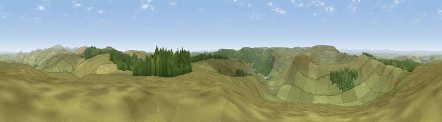

Hungry Law
#2418 in England · top 9% of its area beats it · near ByrnessThe view, rendered

A 360° render of this exact spot computed from the terrain model, tree cover and land cover — summer colours, afternoon light, calibrated against photographs of famous viewpoints. Real trees, hedges and buildings will differ in detail.
The panorama
Grey silhouette: terrain skyline in each direction (720 bearings, Earth curvature and refraction included). Dashed green: skyline with trees (+15 m) and buildings (+8 m) as obstacles. Blue strip: how far the ground is visible on each bearing.
Where the view opens
Wedge length = distance to the farthest visible ground on that bearing (vegetation-aware). Rings at 10, 25 and 50 km.
What fills the view
82% grassland · 17% woodland ·
Angular shares of the visible panorama (visual magnitude), not map area. Landscape diversity 0.22 (0–1 Shannon).
Key numbers
More beautiful places nearby
The staircase of upgrades: each row has a higher view potential than everything closer. Driving times are estimates from straight-line distance, calibrated against real road routing — check an actual route before setting out.
| Place | Direction | Drive | Score |
|---|---|---|---|
| Viewpoint near Byrness | ESE · 3 km | ~7 min | 77.0 |
| Viewpoint near Byrness | E · 3 km | ~8 min | 77.1 |
| Viewpoint c12122_7374 | W · 6 km | ~13 min | 78.9 |
| Viewpoint c11995_7247 | WSW · 14 km | ~25 min | 82.1 |
| Viewpoint c12273_7856 | ENE · 20 km | ~33 min | 83.7 |
| Viewpoint c12396_7887 | NE · 24 km | ~39 min | 85.7 |
| Viewpoint near Kirknewton | NE · 30 km | ~46 min | 86.1 |
| Viewpoint near Chillingham | ENE · 38 km | ~57 min | 88.1 |
55.34861, -2.40012 · source: dobih hill · position refined by local search. Computed location — check access rights before visiting.